A robot that clears
library desks
It patrols the reading room, works out which desks are free, flies a drone over each one, and sorts every object it finds into public property, personal property or waste.
Right: our upper assembly from its URDF. Drag to orbit, move the joints, or explode it.
6 links · 142,842 triangles
exported from SolidWorks
Every part of the project on one page. Click any node to jump straight to it.
One pass through the reading room
The chassis decides where to go and the upper assembly decides what to do at each desk. A state machine hands control between them. The stamp on every stage says how far it has got.
Survey
3D-scan the room; mark waypoints, operation and observation points.
ChassisIn progressLocalise
Depth clouds matched to the map, fused with wheel odometry.
ChassisSimulatedCheck seats
The onboard VLM checks each desk from the observation point: if someone is using it, skip it.
ChassisIn progressTravel
Drive to the next free desk with Nav2.
ChassisIn progressInspect
Skip reserved desks; otherwise fly the drone and photograph the desk.
UpperIn progressClassify
Find each object; label it public, personal or waste.
UpperTestedAct
Plan a collision-free arm path and place the tag.
UpperSimulatedTwo stacks, one state machine
Partly builtChassis decides where to go, upper stack decides what to do. Pick a state to see which modules it uses.
Upper assembly on a two-wheel base
CAD complete · chassis model to followLift, two yaw joints, a telescoping tube and a rack with a suction cup.
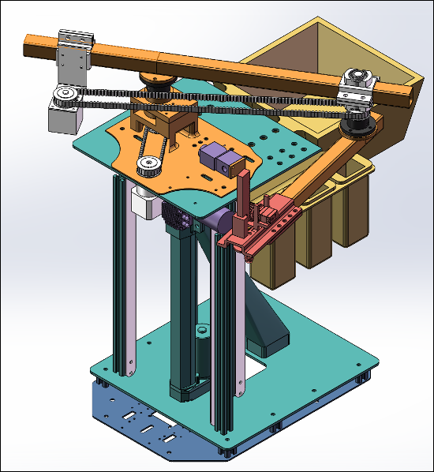
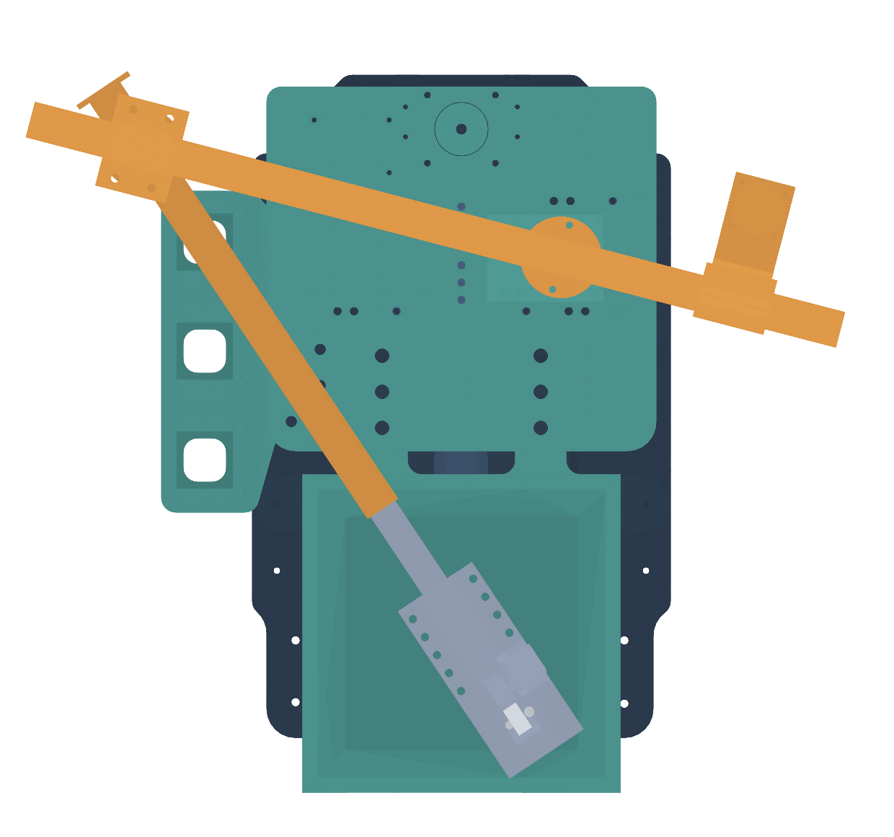
| Joint | Type | Moves | Range |
|---|---|---|---|
lift_slide | Prismatic | Lift platform up | 0 – 300 mm |
shoulder_yaw | Revolute | First arm link about +Z | 360° |
elbow_yaw | Revolute | Second arm link about +Z | 360° |
arm_extension | Prismatic | Telescoping tube outward | ±50 mm |
tool_rack_slide | Prismatic | End rack with suction cup | TBC* |
*Full rack travel to be confirmed.
Shoulder joint in section
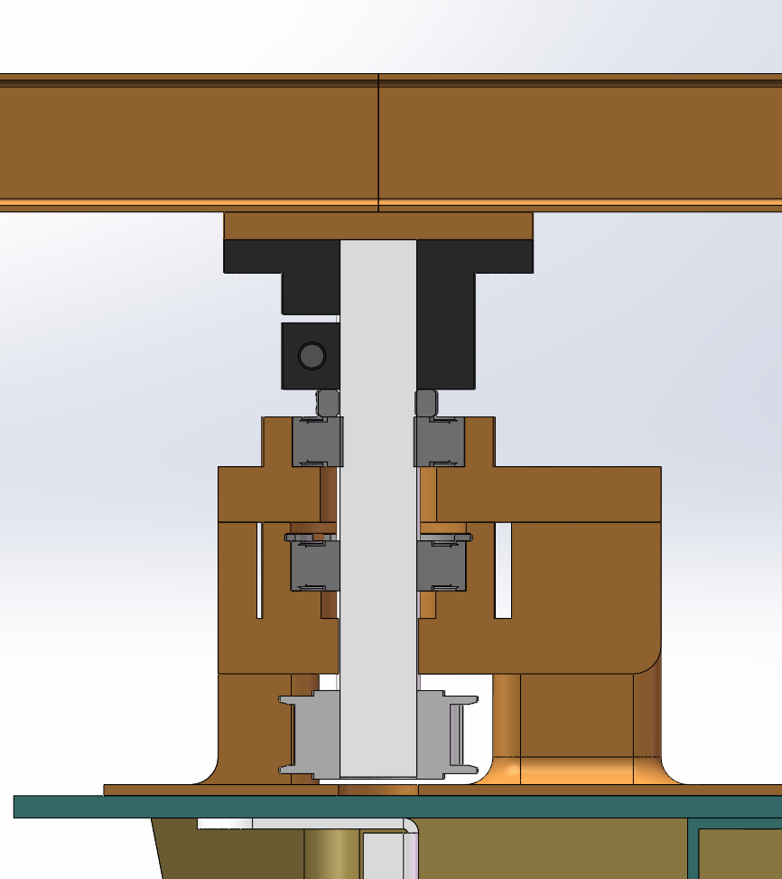
- 1Steel arm
- 2Flange
- 3Shaft collar
- 4Thrust ball bearing
- 5Deep-groove ball bearing
- 6Timing pulley
- 7Shaft
- 83D-printed supports
- 9Aluminium plate
From CAD to hardware

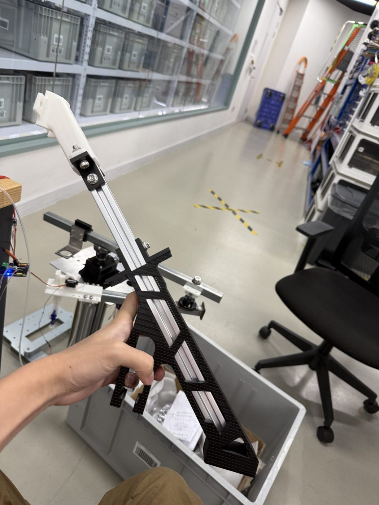
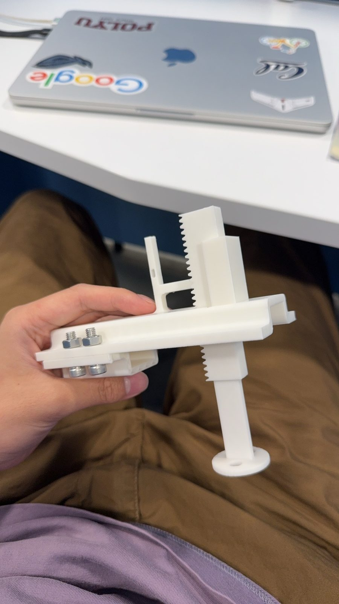
PC supervises, STM32 drives six actuator branches
Architecture fixedOne DC supply, six actuator branches, angle feedback back to the STM32.
Six actuator branches, four already under control
4 of 6 runningServo, pump and valve share one PWM board; the steppers run our own STM32 firmware.
| Actuator | Driven through | Status |
|---|---|---|
| Feedback servo | PWM board | Controlled |
| Mini air pump | MOSFET module on the PWM board | Controlled |
| Solenoid valve | MOSFET module on the PWM board | Controlled |
| Stepper motor 1 | STM32F407, firmware v1.1 | Bench-verified |
| Stepper motor 2 | STM32F407 | In development |
| Linear actuator | H-bridge | Next semester |
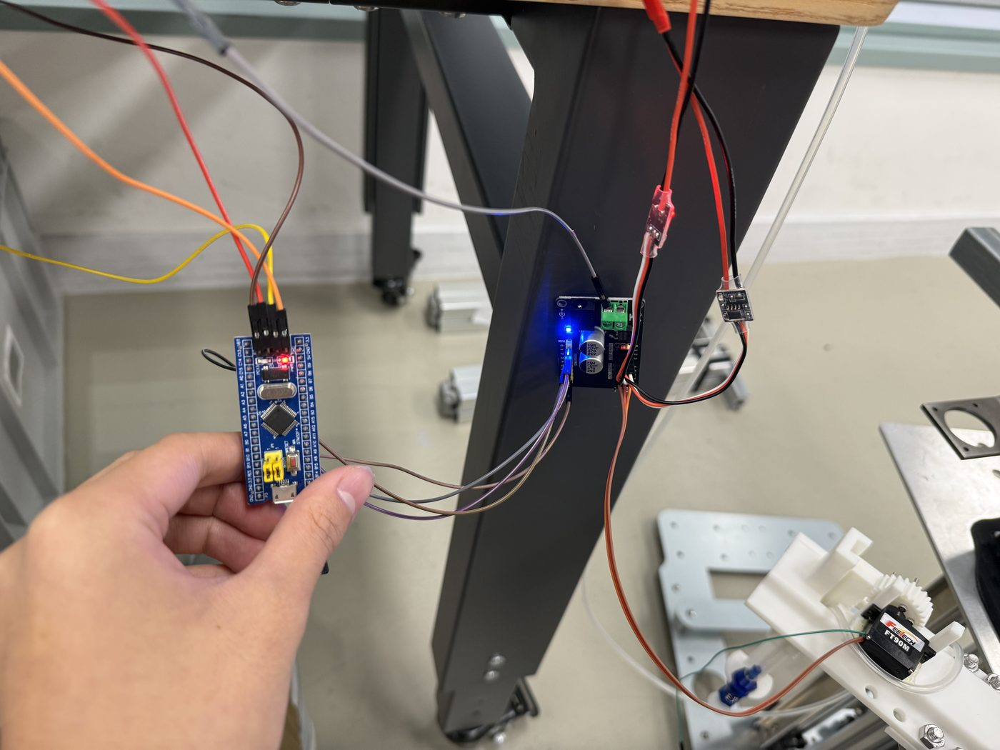
Stepper 1 firmware v1.1 flashed & read back
Safe by default
No motion until wiring is confirmed, zero is set and the axis is armed. Locks after 1.2 s without a heartbeat.
Verified
All 65,000 bytes read back. Forward and reverse jog confirmed at 400 pulses per revolution.
Still open
Scope check of the pulses, angle accuracy on the real axis, encoder feedback.
From one desk photo to a sorted list of objects
Tested on real desksOpen-vocabulary detection, then a vision-language model names and sorts each object.

The camera will be a drone Flying · not yet integrated
Rides on the rear landing pad; at each desk it takes off, photographs the desk from above and lands.
Drone and pipeline were tested separately; the photos below are not from the drone yet.
Four layers of flight safety
- Prop guardsEvery propeller enclosed.
- Kill switchHandheld controller cuts the motors at once.
- Spoken warningSpeaker announces every take-off.
- Strict launch ruleFlies only for a free, unreserved desk.
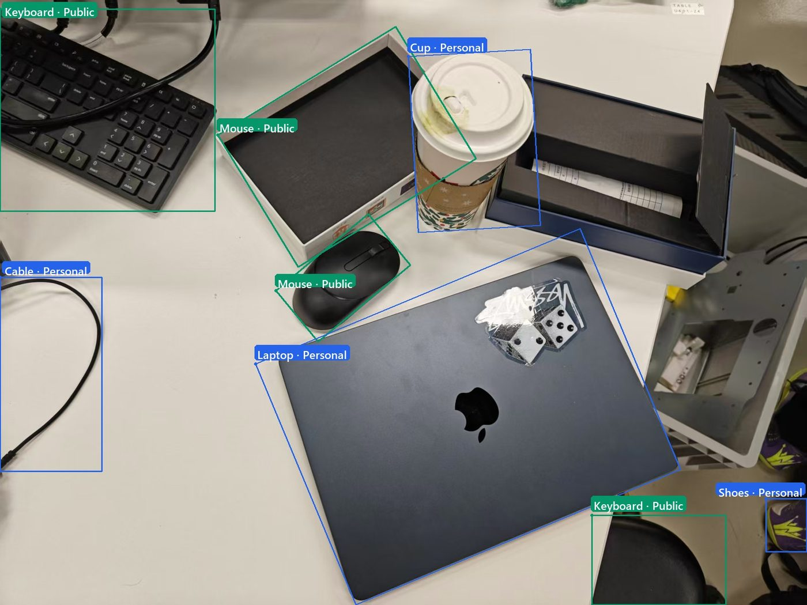
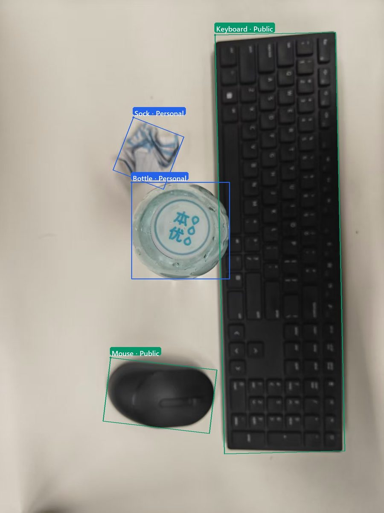
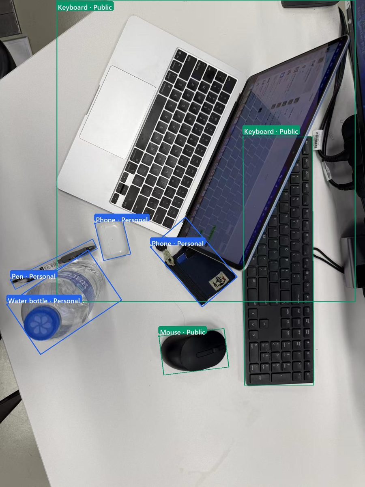
| Image | Candidates | Objects | bf16 | 4-bit |
|---|---|---|---|---|
| Validation desk | 6 | 4 | 13.0 s | 5.6 s |
| Full working desk | 10 | 8 | 12.2 s | 5.3 s |
| Cluttered desk | 10 | 7 | 11.2 s | 5.4 s |
Per photo, RTX 4060 laptop GPU (8 GB).
The fix that mattered most
Give the model a perspective-corrected crop for large objects, as below.
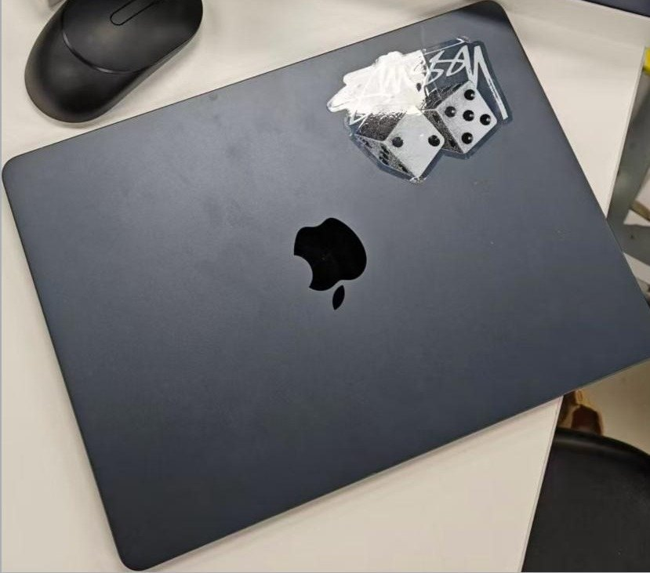

A desk photo goes in.
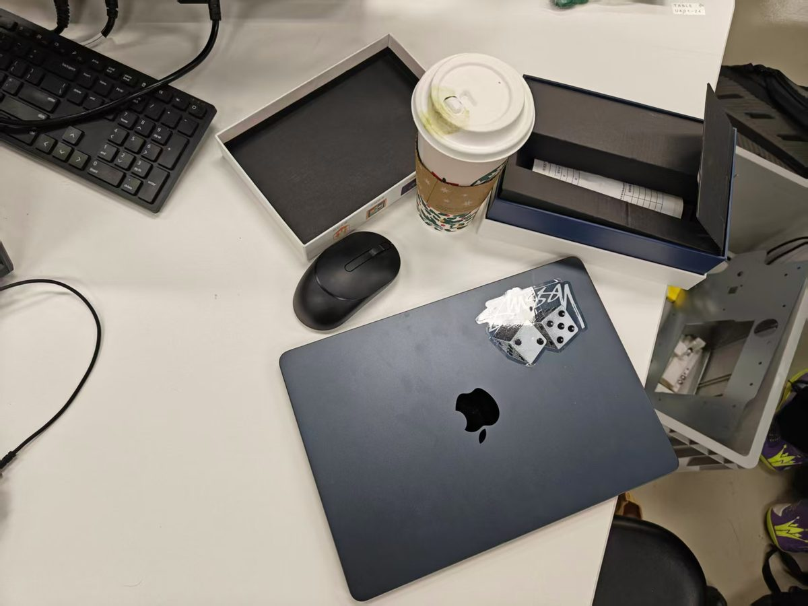
Replay of a recorded run. Red notes mark the two labels still wrong.
Limits of a local VLM on onboard compute
- Memory caps the model: 8 GB GPU fits a 3B model, 4-bit to reach 5.5 s
- Slow for a moving robot: 11–13 s per desk at full precision
- Still misreads: empty box → "mouse", chair → "keyboard"
- Crops lose context: too tight or too loose both hurt
Table calibration Prototype
Table corners → homography → tabletop X–Y.
Three-view rectification Prototype
Three camera views rectified and compared.
Reach the object without touching anything else
SimulatedA simulator places random laptops, cups and books on an 1800 × 800 mm desk. Given a target point, it sizes the arm, solves the joints, checks for collisions and, if needed, moves the base first.
- Size the armPick the shortest links that keep the dead zone small
- Solve the joints2R inverse kinematics
- Check collisionsAgainst every object on the desk
- Move the base if neededWhen the target is out of reach or blocked
- Follow the pathClear objects, then descend onto the target
A few simple objects sit on the desk between the arm and its target.
Illustration on our own arm model: the tip travels 45 mm above the desk, keeps a 30 mm margin around every object and descends onto the target at the end. The objects and their layout are made up for the demo; the arm geometry and joints come from upper_assembly.urdf, solved with 2R inverse kinematics plus the lift.
Four iterations in two days
Fixed base, three planning joints, text-only workspace and inverse-kinematics check.
2R arm on a mobile base: random desk objects, collision checks, base re-planning, top-down view.
Link lengths chosen automatically from the reach the task needs.
Object heights: 3D collision checks, the tip follows obstacle tops, side X–Z view added.
Stop for people, restart on its own
41 logic tests passYOLO11n finds people, depth gives the distance, and every velocity command is gated.
The Astra Pro gives an RGB frame.
Illustration of the logic in our ROS 2 node: the scene is drawn, the rules are the real ones. Between 1.0 and 1.5 m the gate keeps its last state, so a person standing at the line cannot make the robot stop–go–stop.
Fails safe
Also stops if the camera, timing, depth or inference fails.
Watchdog
Zero velocity if the person check goes quiet for 0.3 s.
One gate
The base only accepts /cmd_vel_safe.
Knowing where it is: 4.5 cm error in simulation
Simulated · Isaac Sim + ROS 2Wheel odometry drifts; matching depth clouds to a 3D map corrects it.

How the fusion works
- PredictWheel odometry gives a first guess
- MatchNDT aligns the depth cloud to the map
- GuardBad matches are rejected
- Start upGlobal search finds the first pose
Built on open-source lidar_localization_ros2 and ndt_omp.
Same recording, four estimates
Same 143 s recording, same start.
Position error (XY RMSE) against simulator truth.
| Configuration | XY RMSE | XY max | Yaw RMSE |
|---|---|---|---|
| GICP matching | 33.24 cm | 56.80 cm | 3.27° |
| GICP + guards | 7.32 cm | 9.21 cm | 0.77° |
| NDT + guards | 4.50 cm | 5.74 cm | 0.13° |
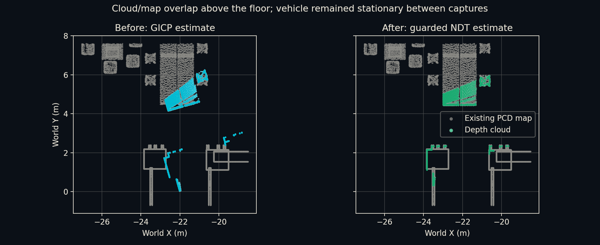
Not proven yet
- One short route, simulation only
- No IMU, no filtering of moving people
Still to build
- Point-cloud map scan, occupancy check (VLM), Nav2 route, state machine
- Same localiser on the real robot
What we ordered
Two order sheets · HK$Main parts order plus an extra-part order for the drone, in Hong Kong dollars. 3D-printed parts are provided by the lab.
- Line items
- 39 36 main + 3 drone
- Budget total
- HK$1,387.42 main HK$1,214.11 · drone HK$173.31
- Saved on structure
- HK$246.50 steel arms and connectors from one supplier for ¥100
Show all 36 main order lines
| No. | Item | Qty | Unit (HK$) | Total (HK$) | Purpose |
|---|---|---|---|---|---|
| A1 | FEETECH FT90M 280° Metal-Gear Servo (Black, 2 kg) | 1 | 44.70 | 44.70 | Suction cup movement |
| A2 | H5M High-Torque Timing Pulley (15 mm Bore) | 1 | 13.94 | 13.94 | Power transmission |
| A3 | H5M High-Torque Timing Pulley (12 mm Bore) | 1 | 13.94 | 13.94 | Power transmission |
| A4 | STM32F407VET6 Minimum System Board | 1 | 46.10 | 46.10 | System control |
| A5 | H5M High-Torque Timing Pulley (8 mm Bore) | 2 | 11.06 | 22.12 | Power transmission |
| A6 | Shaft Collar (15 mm Bore) | 1 | 3.54 | 3.54 | Axial shaft retention |
| A7 | Shaft Collar (12 mm Bore) | 2 | 3.62 | 7.24 | Axial shaft retention |
| A8 | Split Flange Guide Shaft Support (15 mm Bore) | 1 | 17.77 | 17.77 | Shaft support and alignment |
| A9 | Split Flange Guide Shaft Support (12 mm Bore) | 1 | 17.15 | 17.15 | Shaft support and alignment |
| A10 | SKF Deep Groove Ball Bearing (12 mm Bore) | 1 | 9.36 | 9.36 | Low-friction shaft rotation |
| A11 | SKF Deep Groove Ball Bearing (15 mm Bore) | 1 | 12.11 | 12.11 | Low-friction shaft rotation |
| A12 | Tuba Brass Heat-Set Threaded Inserts | 50 | 0.15 | 7.50 | 3D-printed part fastening (MOQ: 50) |
| A13 | Internal Retaining Ring (32 mm) | 2 | 1.06 | 2.12 | Bearing retention |
| A14 | Internal Retaining Ring (29 mm) | 2 | 1.06 | 2.12 | Bearing retention |
| A15 | AS5600 Magnetic Encoder Module (Stepper Motor Version) | 1 | 87.44 | 87.44 | Position feedback |
| A16 | MG90S Servo (20T) Steering wheel | 1 | 7.06 | 7.06 | Servo gear connection |
| A17 | Thrust Ball Bearing | 1 | 3.68 | 3.68 | Axial load support |
| A18 | Thrust Ball Bearing (15 mm Bore) | 1 | 4.88 | 4.88 | Axial load support |
| A19 | Lvwei 57 mm Closed-Loop Stepper Motor with Integrated Driver | 1 | 164.67 | 164.67 | First arm actuation |
| A20 | Rubber Timing Belt (65 Teeth) | 1 | 5.87 | 5.87 | Power transmission |
| A21 | Rubber Timing Belt (192 Teeth) | 1 | 16.47 | 16.47 | Power transmission |
| A22 | Chrome-Plated Hardened Shaft (15 mm × 970 mm) | 1 | 22.35 | 22.35 | Shaft support |
| A23 | Chrome-Plated Hardened Shaft (12 mm × 950 mm) | 1 | 19.41 | 19.41 | Shaft support |
| A24 | H-Bridge Driver Board for Linear Actuator | 1 | 22.12 | 22.12 | Linear actuator control |
| A25 | Electric Linear Actuator | 1 | 125.90 | 125.90 | Upper platform lifting |
| A26 + A31 | Steel arm sections ×2 and lift-to-rail sheet-metal connectors ×4 (one supplier, ¥100) | 1 lot | 117.70 | 117.70 | Robotic arm structure and lift-to-rail connection |
| A27 | Stainless Steel Sheet Metal Slide Rail Bracket | 1 | 23.47 | 23.47 | — |
| A28 | Aluminium Extrusion Sliding Carriage | 4 | 22.35 | 89.40 | Guided sliding motion |
| A29 | Aluminium Extrusion Angle Bracket | 4 | 4.60 | 18.40 | Extrusion frame connection |
| A30 | Chrome-Plated Base Plate | 1 | 65.84 | 65.84 | — |
| A32 | Serial PWM Servo Module with External Power Input | 1 | 22.35 | 22.35 | Servo and pneumatic control |
| A33 | DC-DC Step-Down Voltage Regulator Module (5 V Output) | 1 | 14.70 | 14.70 | 5 V power supply |
| A34 | DC-DC Step-Down Voltage Regulator Module (12 V Output) | 1 | 14.70 | 14.70 | 12 V power supply |
| A35 | Wire Splicing Connector | 5 | 2.10 | 10.48 | Electrical connections |
| A36 | Lifting Platform Sheet Metal Component | 1 | 78.61 | 78.61 | — |
| A37 | Vacuum Pump Suction Cup Set | 1 | 58.90 | 58.90 | Vacuum pump, suction cup, solenoid valve |
| Total | 1,214.11 |
Show the 3 drone extra-part lines
| No. | Item | Qty | Unit (HK$) | Total (HK$) | Purpose |
|---|---|---|---|---|---|
| A1 | OV2640 camera | 1 | 44.28 | 44.28 | Top-down desk photo |
| A2 | E1 Mini open-source drone platform | 1 | 82.34 | 82.34 | The mission; visual pose estimation and outer-loop position control |
| A3 | HPXGRC ELRS 2.4 GHz micro receiver, external antenna | 1 | 46.69 | 46.69 | Remote control and kill switch |
| Total | 173.31 |
Weak points, and what we do if they fail
Stage 2 workNo one may step in during the competition, so every weak point needs a fallback that runs on its own.
The aluminium-extrusion lift is not stiff enough with the arm and drone pad on top; the platform can sway when the arm is extended.
Indoors, the small quadcopter can drift while hovering, which blurs or shifts the desk photo, and it may not land squarely on the pad.
Seven people, five work streams, competition in week 12
Next semesterWho builds what, and when it must be ready.
How much of this AI did
Declared in fullWe used AI tools heavily throughout this project, from the first design sketches to the final code, and we want to be clear about where. Several different AI tools were involved.
A constant sparring partner
We discussed ideas with AI and used it to refine details.
AI wrote most of the code
AI wrote most of the code; the approach is ours.
| Area | How AI was used | Share of the work done by AI |
|---|---|---|
| System and mechanical design | Discussion partner; refined details of our design | Discussion |
| Localisation | Wrote most of the code | Coding; the approach is ours |
| Perception and VLM pipeline | Wrote most of the code | Coding; the approach is ours |
| Embedded control | Wrote most of the firmware and control code | Coding; the approach is ours |
| This website | Wrote most of the page | Most of the code |
Code and files
Everything is in the ICPROJECT2026 organisation on GitHub, and every repository is public.